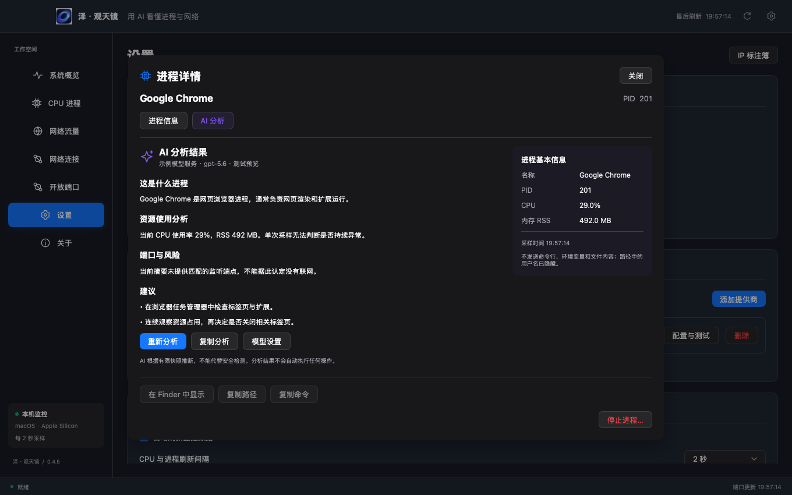
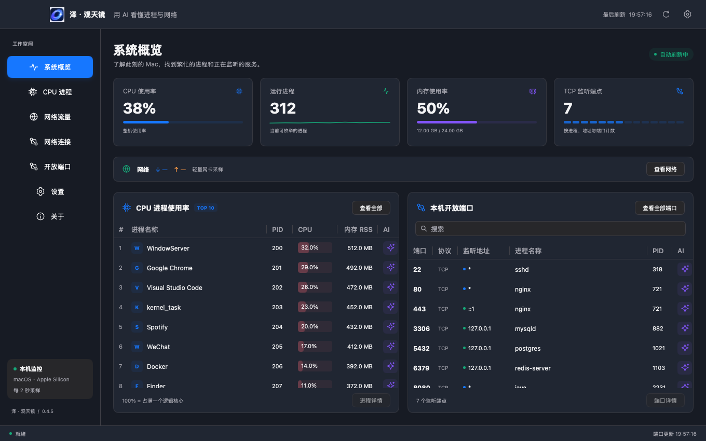
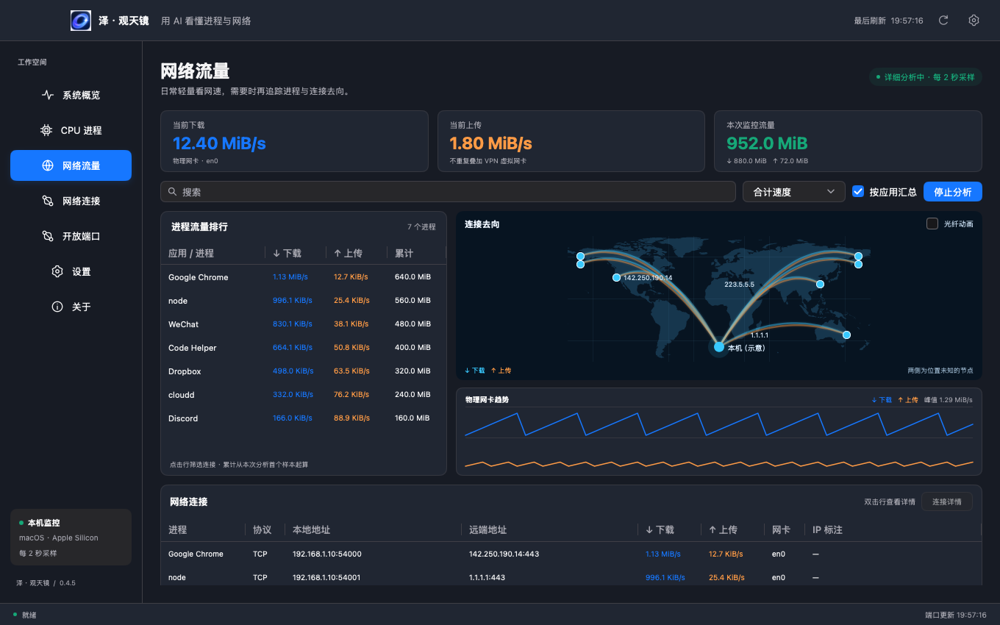

NETWORK VISIBILITY
看清连接，知道流量去向。
查看 TCP / UDP 连接、本地与远端地址，为熟悉的 IP 添加业务标注。macOS 还能按需打开流量排行与连接地图。
流量排行与连接地图目前仅 macOS 支持。
YOUR SYSTEM, EXPLAINED.
这个进程在做什么？为什么占用资源？
把进程、资源和端口交给 AI，
获得清楚的解释和下一步排查思路。
Google Chrome 负责网页渲染、标签页和扩展运行。多个浏览器进程共同工作是常见现象。
在浏览器任务管理器中检查标签页与扩展，并连续观察资源占用变化。
01 / AI INSIDE
从陌生的进程名，到资源占用与监听端口。
点击 AI 图标，把系统数据变成可读的分析。



了解它可能属于什么软件、承担什么工作，区分已知信息和推测。
结合 CPU、内存与线程等摘要，帮助你判断下一步应该观察什么。
解释监听端口与地址的含义，给出可操作的检查建议。
02 / A CLOSER LOOK
把日常监控、连接排查和 AI 分析连起来。
轻量观察，按需深入。
NETWORK VISIBILITY
查看 TCP / UDP 连接、本地与远端地址，为熟悉的 IP 添加业务标注。macOS 还能按需打开流量排行与连接地图。
选择提供商、端点和模型。支持连接测试，也能读取服务提供的模型列表。
系统数据在本机采集。主动点击 AI 分析时，才向你配置的模型服务发送所选进程摘要，并可查看发送数据预览。
分析不会自动执行命令或停止进程。
原生界面、明暗主题、菜单栏 / 系统托盘，以及随时可查的进程详情。
03 / GET STARTED
用你自己的模型服务，
从第一个想了解的进程开始。
选择对应的系统版本。macOS 拖入应用程序，Windows 完整解压后运行。
在设置中填写端点、密钥和模型，完成连接测试并设为默认服务。
在进程或端口旁点击 AI 图标，查看解释、分析与排查建议。
READY WHEN YOU ARE
下载泽 · 观天镜，开始了解你的电脑。
当前版本 v0.4.6Apple Silicon · M 系列芯片
macOS 13 或更新版本 · 打开后拖入「应用程序」
当前安装包不含 Intel Mac 版本。尚未完成 Developer ID 签名与公证，macOS 可能提示来源验证。
Intel / AMD · x64
Windows 10 / 11 · 完整解压后运行 EXE
便携版未签名，已完成交叉编译，尚未完成 Windows 实机验证。部分网络分析能力仅 macOS 支持。
需要。应用支持 OpenAI 兼容接口与 Anthropic 协议，你可以配置自己的提供商、API 端点、密钥和模型。模型调用的费用与额度由对应服务提供商决定。
可以。进程、CPU、内存、端口与基础网络监控可独立使用。AI 分析需要连接你配置的模型服务；可选的公网 IP 位置查询也需要联网。
主动请求分析时，会发送所选进程的名称、PID、路径、资源占用与匹配的 TCP 监听端点等摘要；路径中的用户名会隐藏。不会发送命令行、环境变量、文件内容或其他进程数据，发送内容可以预览。模型结果用于辅助排查，不会触发自动操作。
两端都支持进程、资源、端口、基础网络连接、本地 IP 标注和 AI 进程分析。Windows 目前不支持逐进程 / 逐连接流量速率、流量排行和连接地图；UDP 只展示本地绑定。当前 macOS 下载包面向 Apple Silicon。
首屏是预设内容的静态交互演示，不会连接 AI 服务，也不会读取你的设备信息。下方应用截图来自实际界面测试，使用示例数据；实际 AI 分析结果取决于提供的摘要和配置的模型。